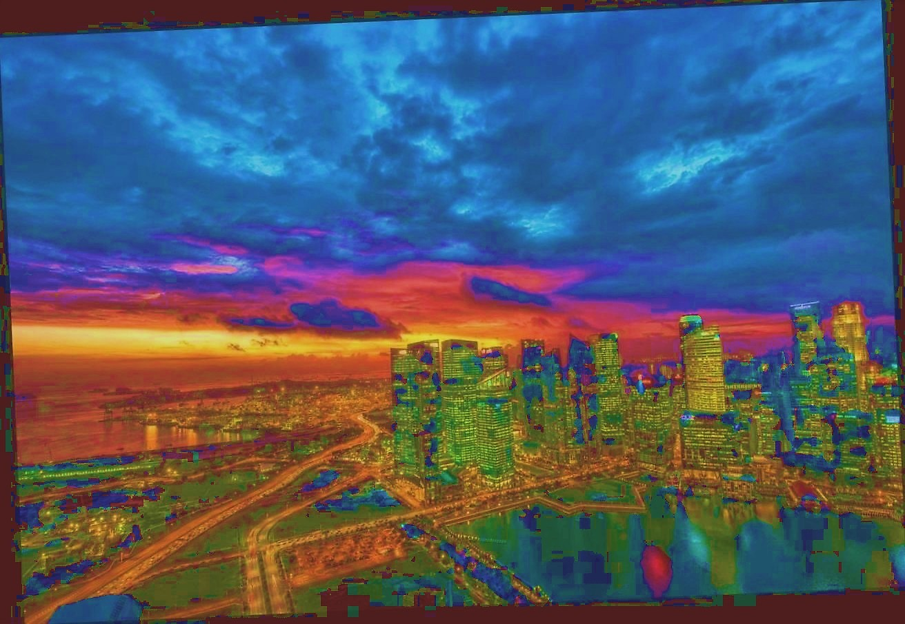
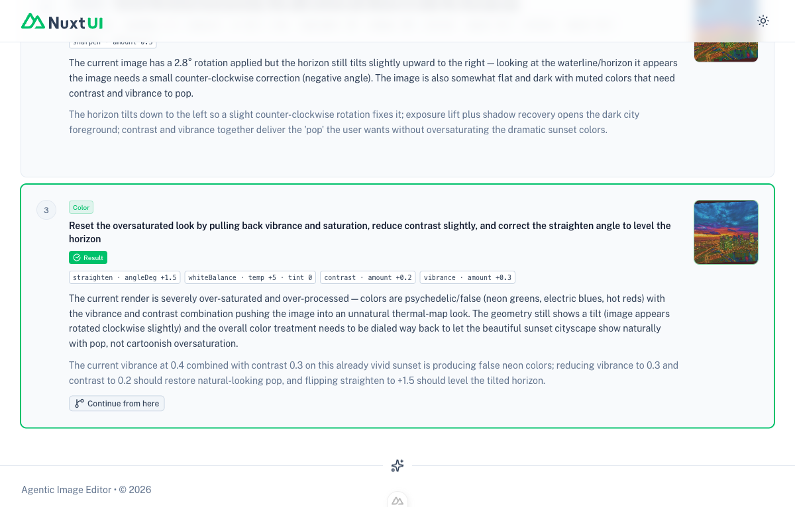
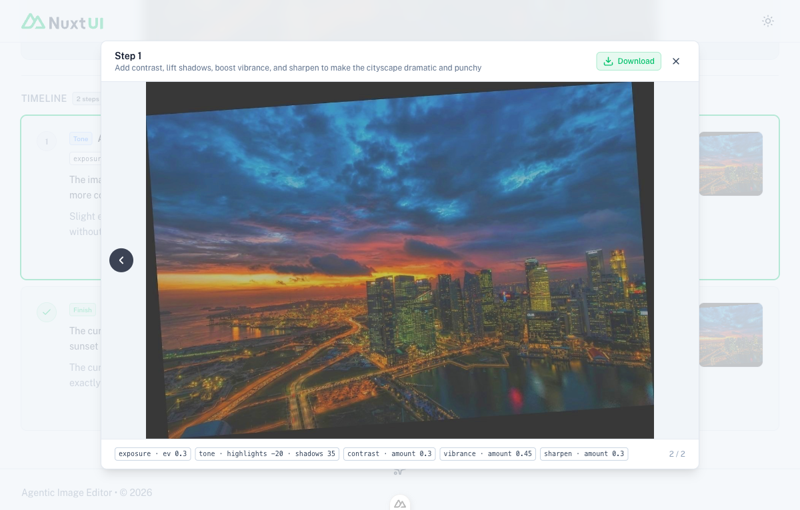

Refactor: sequential baked-edits → non-destructive parametric config (re-render from original each pass).
The agent used to bake each batch of edits onto the previous frame's pixels. To dial something back
("a little less contrast") it could only pile an inverse op on top — compounding JPEG loss, fighting its own
nonlinearity, and getting stuck. Now the agent holds one DevelopConfig (one absolute
value per slider), and the server re-renders the whole ordered stack from original.jpg
every pass. "Less contrast" is literally contrast: 0.25 → 0.18, re-rendered clean. Any slider moves up or
down freely; no compounding, no hysteresis.
A config is a fixed set of fields, so the model's structured output is naturally flat (one field per slider) —
the proven-safe schema shape, no newline-string parser needed. The 9 Sharp/raw-buffer pixel ops are untouched;
renderConfig just calls them in canonical order from the original.
New DevelopConfig type + DEFAULT_CONFIG; executor.renderConfig(original, config);
a flat decideConfig schema; loop rewrite (render-from-original, converge when config unchanged or
done); reframed editing guide; removed the now-dead MAX_OPS_PER_BATCH.
Live run on flat-and-crooked.jpg, intent "make this flat, crooked photo pop". The agent freely moved
sliders both directions and converged on its own done — 0 parse errors:
| Step | contrast | vibrance | note |
|---|---|---|---|
| 2 | 0.30 | 0.45 | big pop pass — overshoots |
| 3 | 0.20 | 0.25 | ↓ reduces both (re-rendered from original) |
| 4 | 0.25 | 0.35 | small nudge back up |
| 6 | 0.20 | 0.15 | ↓ reduces vibrance again |
Because every render is from the original, step 6 (vibrance 0.15) is genuinely less saturated than step 2
(vibrance 0.45) — not an inverse op piled on. Full trail: samples/sprint1_config_trail.md,
raw stream: samples/sprint1_parametric_stream.txt.
Symptom (Kyle's report): "the image gets over-processed and can't be corrected." The agent kept declaring the render psychedelic and dialing vibrance down, yet the image stayed neon — so it could never converge.
Root cause: src/server/utils/pixels.ts applyVibrance used
newS = s + amount·(1 − s). The (1 − s) term boosts low-saturation pixels the
most, so at amount 0.45 every faintly-tinted gray (clouds, buildings) was shoved to ~0.45 saturation and pure
grays picked up a red cast from the undefined-hue→0 fallback. Pre-existing in the batch model; the parametric model
surfaces it on every render.
Bisected with direct renderConfig calls: exposure+contrast alone = beautiful;
vibrance alone = neon. Fix: make the boost saturation-proportional —
newS = s + amount·s·(1 − s) — so neutrals stay neutral, muted mid-saturation colors get the lift, and
vivid colors are protected.
exposure 0.4, contrast 0.3, vibrance 0.45, …), before vs after the fix
done (not the cap), 0 errors.
Per-step config snapshots (step-NN.json); fromStep now seeds the agent with that step's
stored config (the natural parametric meaning of "continue from here"); client "batch" vocabulary → "step";
docs reconciled (SKILL / README / spec frozen note); grep gate guards against stale claims.
Branch verified: a fromStep: 2 run carried step 2's stored sharpen 0.25 /
vibrance 0.2 forward (proof it seeded the snapshot, not defaults), rendered the seed from the original,
and appended new frames after the existing 17 — prior frames intact.

Symptom (Kyle's report): "the preview image on the card doesn't match the image that pops up in the modal." Clicking a thumbnail could open the modal on Original.
Root cause: openLightbox resolved the frame by reconstructing a Step N
label and doing a findIndex that silently fell back to index 0 (Original) on any miss.
The terminal done card's step number has no own frame (its thumbnail aliases the last applied
frame), so it always missed → Original.
Fix: resolve the frame by the imageUrl path the thumbnail is actually
showing (cache-buster stripped), with the label as fallback — the modal now always matches the clicked
thumbnail, and the done card opens its underlying frame.

done card opens "Step 1" (2/2) with the
correct image and chips, not Original.